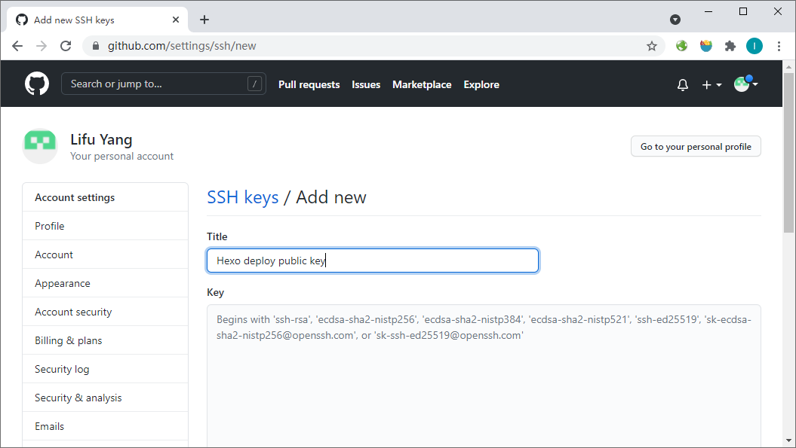
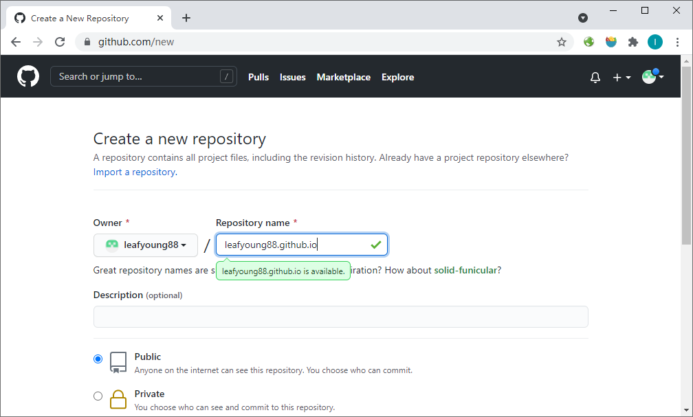
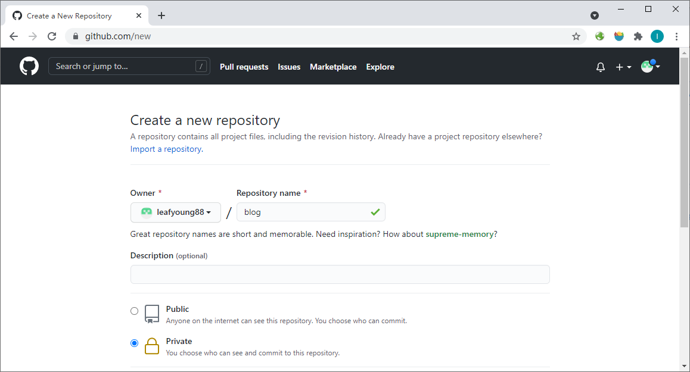
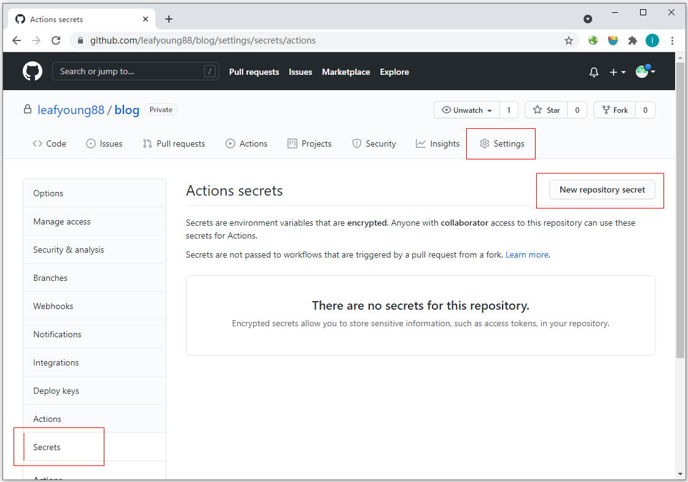
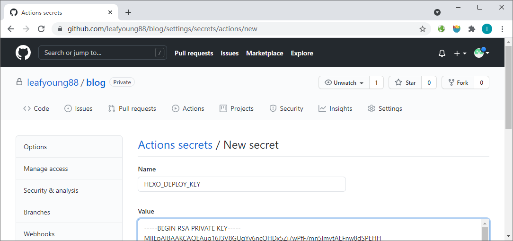
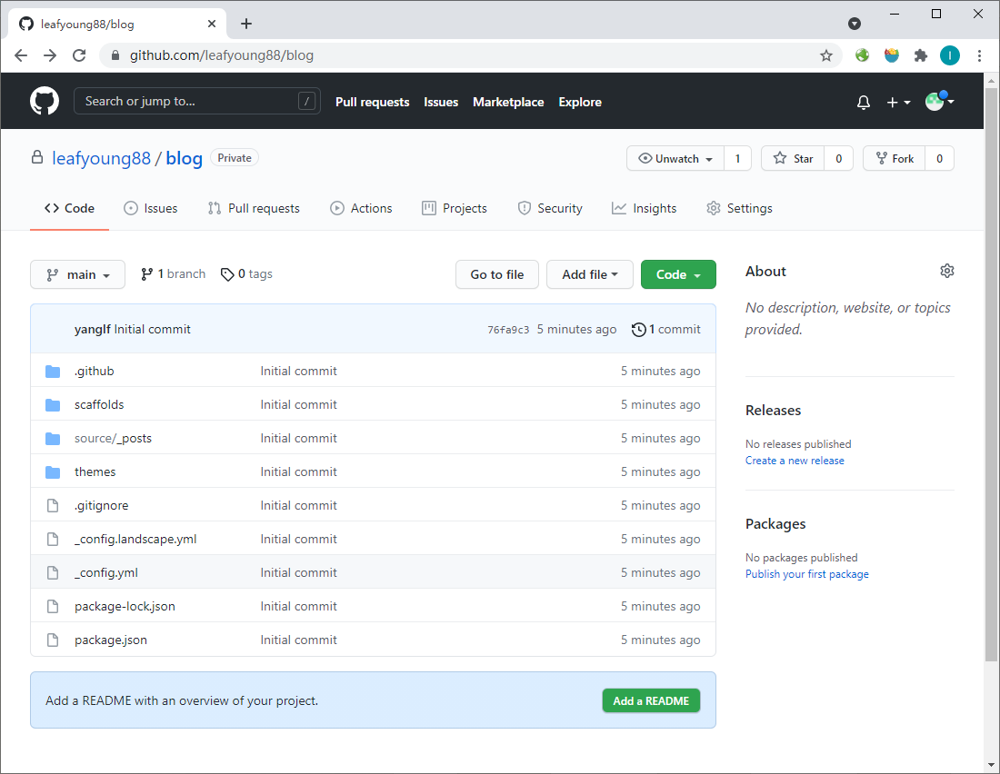

介绍
本文详细描述如何利用GitHub Actions进行Hexo静态站点自动部署，从而避免了在本地端每次更改之后都要重新生成静态HTML文件并提到个人GitHub Pages仓库的重复性工作，大大提高了Hexo的易用性。
必要软件：
- Node.js
- Hexo
- Git
并且：
- 了解GitHub Pages， Git Actions等基本概念
- 了解Hexo的基本使用，可以使用Hexo在本地建立站点并运行
GitHub端设置
Step1：生成ssh密钥
运行命令行ssh-keygen，生成ssh密钥对，名称随意，这里为hexo-deploy-key，应生成hexo-deploy-key和hexo-deploy-key.pub两个文件，且前者为私钥，后者为公钥。
Step2：在GitHub添加公钥
登录GitHub后在个人账户的“Setttings”中点击进入“SSH and GPG Keys”页面，点击“New SSH Key”,输入任意名称，然后将hexo-deploy-key.pub文件中内容填入“Key”文本框并保存。

Step3：创建GitHub Pages仓库
新建一个“公开”仓库，名称为<username>.github.io，这里是leafyoung88.github.io，该库为GitHub Pages的默认站点，无需进行其它配置。

Step4：创建站点源码仓库
新建一个私有仓库，用于存放Hexo生成的网站源代码，名称随意，这里为blog

进入blog仓库的“Settings”->“Secrets”，点击“New repository secret”按钮：

新建一个名为“HEXO_DEPLOY_KEY”的secret，粘贴hexo-deploy-key文件中的内容

本地设置
Step1：创建本地站点
运行hexo init blog创建站点源码，此时生成目录blog，进入该目录。（在进行以下操作前，建议在本地测试hexo工作正常）
Step2：修改部署目标
修改_config.yml，将末尾的deploy段修改如下
1 | deploy: |
(注意，将其中leafyoung88改成你个人的用户名)
以上指令指示需要将Hexo生成的静态网页发布到leafyoung88.github.io这个仓库的main分支，后续Hexo部署的时候，新的页面会替换原有的页面。
Step3：启用GitHub Actions
在.github目录下新建子目录workflows，并在其下新建文件“hexo-deploy.yml”，在文件中输入以下内容：
1 | name: Hexo Deploy |
这个workflow会在每次main分支有提交的时候自动执行，在github上自动根据hexo源代码生成静态网页，并自动部署到leafyoung88.github.io这个仓库中。
Step4：提交源码
修改保存后，以下运行命令行，新建本地代码仓库，添加Hexo相关文件，然后提交到GitHub的仓库（blog）中：
1 | git init |
执行成功后，源码将上传到代码仓库的main分支

提交完成后，Hexo Deploy这个workflow自动执行，几分钟后就可以在浏览器中访问https://leafyoung88.github.io了。
参考
- 本文标题：GitHub Actions + Hexo 配置
- 本文作者：Lifu Yang
- 创建时间：2021-08-18 08:48:15
- 本文链接：https://leafyoung88.github.io/2021/08/18/GitHub-Actions-Hexo/
- 版权声明：本博客所有文章除特别声明外，均采用 BY-NC-SA 许可协议。转载请注明出处！